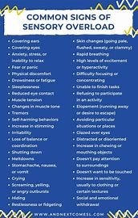
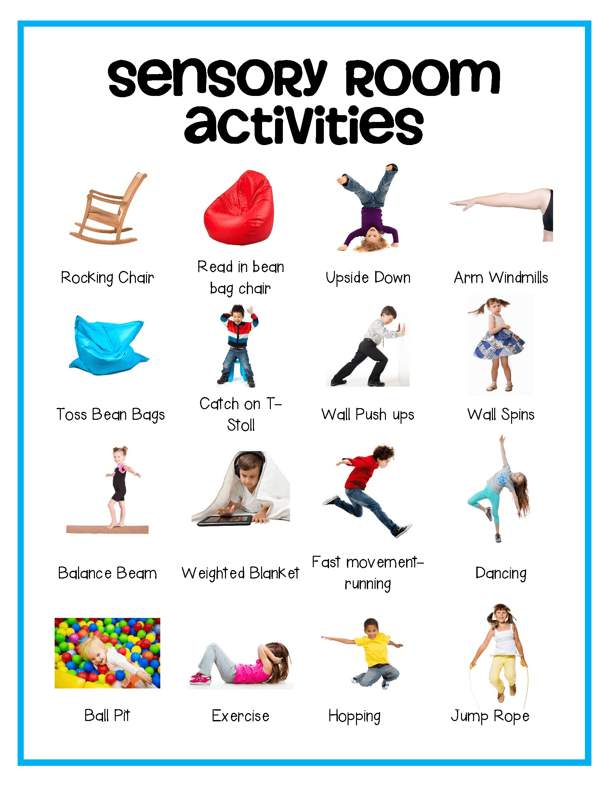

Sensory
| Circle Multiple Items | Same & Diffrent | Math Pages |
|---|---|---|
|  |  |  |
Individuals with autism often experience unique sensory processing challenges, which can significantly
impact their daily lives. Sensory sensitivity in autism can manifest as either
hypersensitivity (over-responsiveness) or hyposensitivity (under-responsiveness) to sensory stimuli such as sounds, textures, tastes,
and lights1. For example, a person with hypersensitivity might
find everyday noises unbearably loud or certain fabrics extremely uncomfortable, leading to anxiety and avoidance behaviors2.
Conversely, someone with hyposensitivity might seek out intense sensory experiences,
such as spinning or touching various textures, to fulfill their sensory needs